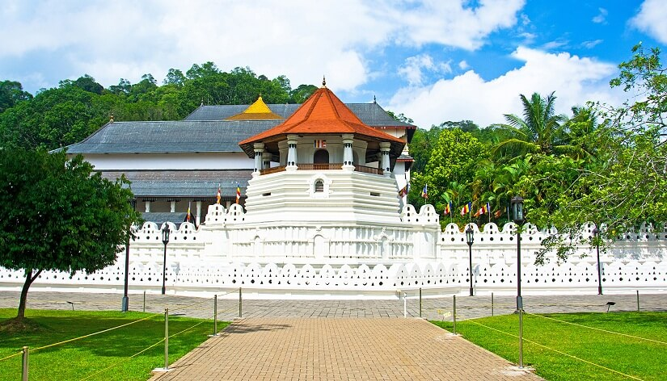

TEMPLE OF THE TOOTH

Sri Dalada Maligawa or the Temple of the Sacred Tooth Relicis a Buddhist temple in the city of Kandy, Sri Lanka EXPLORE MORE
Sri Dalada Maligawa or the Temple of the Sacred Tooth Relicis a Buddhist temple in the city of Kandy, Sri Lanka EXPLORE MORE
Adam's Peak is a 2,243 m (7,359 ft) tall conical mountain located in central ofSri LankaIt is well known for the Sri Pada rock formation near the summit, which in Buddhist tradition is held to be the footprint of the Buddha, in Hindu tradition that of Hanuman or Shiva and in some Islamic and Christian traditions that of Adam, or that of St. ThomasEXPLORE MORE
Sigiriya is a large rock fortress build by King kashyapaIt is a world heritage site in Sri LankaIt is situated in central province of Sri Lanka EXPLORE MORE
Sinharaja Forest Reserve is a forest which belongs to sabaragamuwa and southern provinces of Sri Lanka and a biodiversity hotspot It is of international significance and has been designated a Biosphere Reserve and World Heritage Site by UNESCO EXPLORE MORE
Horton Plains National Park is a protected area in the central highlands of Sri Lanka and is covered by montane grassland and cloud forest and it is known as a world heritage siteEXPLORE MORE

Adisham Hall or Adisham Bungalow is a country house near Haputale, in the Badulla District, Sri Lanka Former names - Adhisham hall Elevation - 5000 feet above sea Owner - Catholic church in sri lanka EXPLORE MORE
ELLA WATERFALL NUWARA ELIYA PINNAWALA ELEPHANT ORPHANAGE YALA NATIONAL PARK ARUGAM BAY HIKKADUWA PASIKUDAH